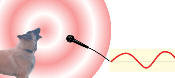
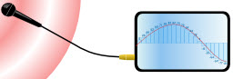
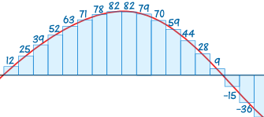
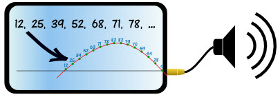

Analog and Digital

Analog: something physical with continuous change.
Digital: made of numbers.
Arrow Barks!
Let's record him barking:

Arrow's bark is analog. It is actual pressure waves in the air, so it is physical with continuous change.
Continuous change: changes smoothly ... no sudden breaks.
And the microphone converts that pressure into an electrical signal. It is still analog (the electricity is physical, and has continuous change).

But when it gets to your computer or phone it gets converted to digits!

The analog signal is measured thousands of times a second by special electronics ... and is then saved as numbers.
So the "sound" is now "12, 25, 39, 52, 68, 71, 78, 82, 82, 79, 70, 59, ..." (in fact it would be in binary, so would be something like "000011000001100100100111...")
It is now digital!
Notice the digital data has sudden jumps up and down ... it does not change continuously.
It is Discrete Data: that means it can only be certain values (such as 1, 2, 3, etc).
Digital data is very easy for computers and phones to use. It can be saved, shared electronically, sent all over the world quickly and more.
How can we hear Digits?
Easy! The numbers are used to control the size of an electrical signal, which is analog.
Digital becomes Analog

The electricity can be sent to a speaker ... ... to make sound waves again!
It should sound very much like the original bark (but not perfectly so!)
Digital Pictures
A similar thing happens when you take a picture.
Light (which is analog) gets projected onto a grid of millions of little sensors inside the camera:

The camera measures the light at each point and produces numbers.
The picture is now digital!
So the "picture" is now "A1DDF9, ADE3FF, B5E7FE, AFE4F8, ...", which are hexadecimal color numbers, (that are used internally in binary, so would be something like "101000011101110111111001...")
Look really closely at a digital picture ... it is made up of millions of little squares called "pixels":

Each "pixel" is made using a hexadecimal color number.
Digital IS Numbers
So digital pictures, music, videos etc are actually stored on your device as numbers.
Numbers rule!